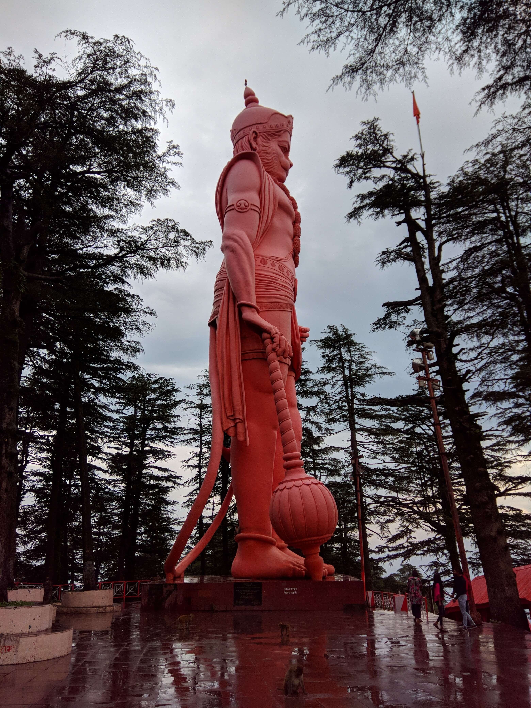
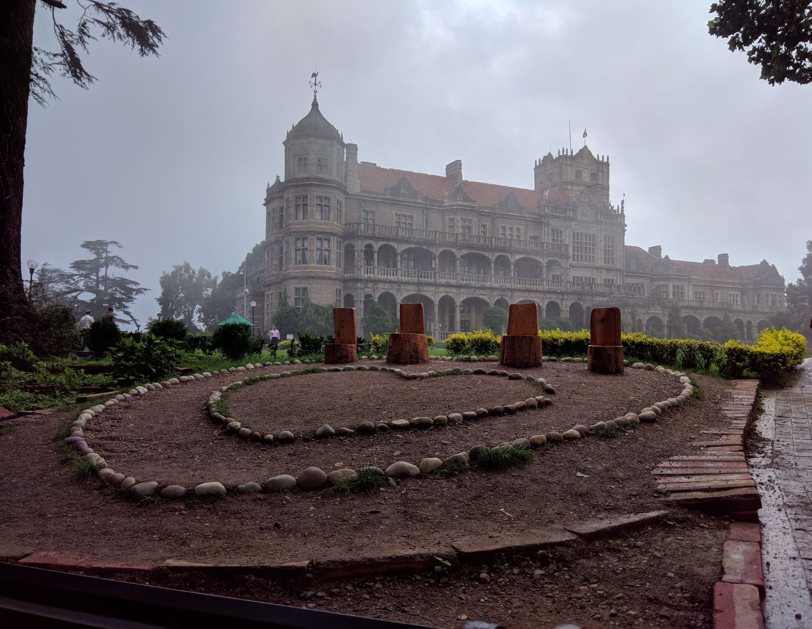
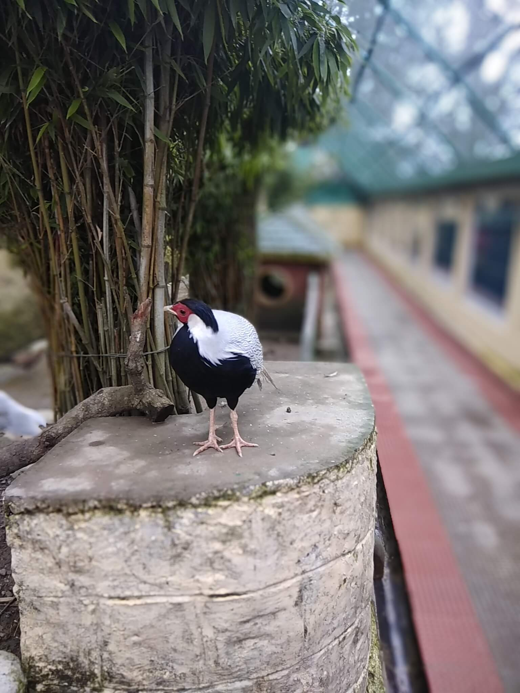
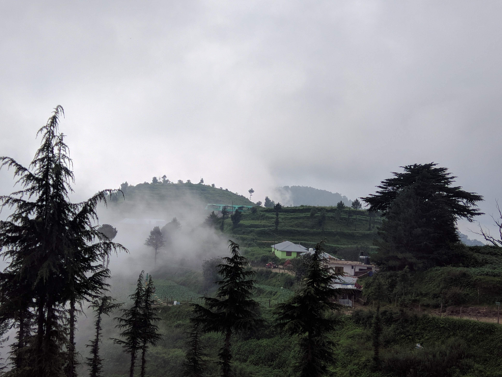

Posted by: Shrinjoy Saha
A Little Background
Shimla is one of the most popular hill stations in India. Shimla was declared as the summer capital of British India. After independence, the city became the capital of Panjab and later it became the capital of Himachal Pradesh.
Best time to visit Shimla
How to reach Shimla
Travelers coming from abroad can book their tickets to Indira Gandhi International Airport in Delhi, which is about 366km from Shimla. travelers can avail taxis, bus, or train service to reach Shimla.
Recommended taking Kalka Mail, which departure 9:30 p.m. from Delhi and you will reach Kalka at 4:35 a.m. after one hour 5:45 a.m. toy train(Shivalik Deluxe Express) is available for Shimla, you will reach Shimla at 10:35 a.m.
It's a good option for budget travelers, travelers can save hotel fare for one night and travelers will get a full day to explore Shimla.
The next good option is Shatabdi express, which departure at 7.40 a.m. from Delhi and you will reach Kalka at 11:45 a.m. It's the fastest train route from Delhi to Kalka. At 12:10 p.m. you will get Toy train Himalayan queen, you will reach Shimla by 5:30 p.m.
Kalka to Shimla is a narrow-gauge track and is known for its dramatic views of the hills and surrounding villages.
First Delhi to Kalka by Bus. then Kalka to Shimla toy train.
Second Delhi to Shimla by Bus.
First talk about Delhi to Kalka by bus. Best option to take the bus after 9 p.m. from Delhi. So, that you can spend a night on the bus and you can save hotel fare and you will reach 4:30 a.m. to Kalka. after that, at 5:30 a.m. you can take the toy train from Kalka. Buss will take 6-7 hr to reach Kalka.
Let talk about the second option Delhi to Shimla by Bus. From Delhi take a bus for Chandighar, not Kalka. because Delhi to Chandigarh more buss are available. Then from Chandighar, you will get many busses for Shimla.
Day by day plan
Day 0 | Starting Point Delhi
Take an overnight bus or train from Delhi to reach Shimla in the AM. Try reaching around 10-11 AM.
Day 1 | Delhi - Kalka - Shimla
You can also enjoy a 5 mins ropeway ride from Ridge to Jakhoo. You can also enjoy a round trip ropeway ride.

Jakhoo Temple
Day 2 | Exploring Shimla

indian institute of advanced studies

himachal birds park
Day 3 | Exploring Kufri

Kufri
Day 4 | Shimla - Kalka - Delhi
Where to stay in Shimla
Hotels are easily available in Shimla.
Food options
If you are a Chinese food lover, try out these places.
You will get delicious food at a reasonable price.
Also, try out the Indian Coffee House , it was established in 1957. It is a tourist attraction of Shimla.
You can also try Wake and Bake cafe , they offer so delicious food at a reasonable price.